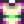

Frühlingszwiebel
| Frühlingszwiebel | |||||||||||||||||||||||
| Wachsen im Frühling in der Wildnis. | |||||||||||||||||||||||
| Information | |||||||||||||||||||||||
| Quelle | Sammeln | ||||||||||||||||||||||
| Fundort | Zundersaftwald | ||||||||||||||||||||||
| Jahreszeit | |||||||||||||||||||||||
| Energie / Gesundheit |
|
||||||||||||||||||||||
|
|||||||||||||||||||||||
|
|||||||||||||||||||||||
Die Frühlingszwiebel kann mittels Sammeln während des Frühlings im Zundersaftwald gefunden werden und zwar im Gebiet nördlich des Abwasserkanals. Im Gegensatz zu anderen Sammelbaren Gegenständen, erscheinen Frühlingszwiebel jeden Tag erneut: alle ungeernteten Zwiebeln werden am Ende des Tages entfernt und neue Zwiebeln erscheinen. Der Leben vom Land-Fernsehkanal zeigt am 4. Frühlingstag einen Tipp bezüglich Frühlingszwiebeln. Frühlingszwiebeln können auch vom Reisewagen für  100–1.000 G gekauft werden.
100–1.000 G gekauft werden.
Das Ernten einer Frühlingszwiebel bringt dem Spieler 3 Sammeln-EP. Nur eine Zwiebel kann pro Pflanze gepflückt werden, Sammler-Beruf hat bei Frühlingszwiebeln keine Wirkung.
Nachdem der Spieler mit Jas und Vincent 8 Freundschaftsherzen erworben hat, kann die Frühlingszwiebel-Meisterschaft erworben werden, was den Verkaufspreis von Frühlingszwiebeln dauerhaft um 5 × erhöht.
Als Geschenk
| Reaktionen der Dorfbewohner
| |
|---|---|
| Mag es | |
| Gefällt nicht | |
Bündel
Wurden Remixed Bündel bei Spielstart gewählt, ist Frühlingszwiebel eine Option für das  remixed Sammeln (Frühling) Bündel im Handwerksraum.
remixed Sammeln (Frühling) Bündel im Handwerksraum.
Rezepte
Wird nicht für Rezepte gebraucht.
Schneiderei
Frühlingszwiebel kann in der Spule der Nähmaschine genutzt werden, um das Frühlingshemd herzustellen. 
Aufträge
Wird für keine Aufträge gebraucht.
Fehler
An Regentagen hinterlässt eine geerntete Frühlingszwiebel einen trockenen Boden, während andere bearbeitete Felder nass werden.
Geschichte
- 1.3: Frühlingszwiebel-Meisterschaft hinzugefügt.
- 1.4: Die Qualität von Frühlingszwiebeln wird jetzt zu Tagesbeginn festgelegt. Dieses behebt einen Exploit, bei dem durch wiederholtest Klicken auf eine Frühlingszwiebel mit vollem Inventar die geerntete Zwiebel die Qualität der gehaltenen annahm. Kann jetzt in der Schneiderei verwendet werden.